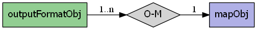

mapscript.outputFormatObj¶
- class mapscript.outputFormatObj(driver: char const, name: char = None)¶
The OUTPUTFORMAT object
Overview
The outputFormatObj has the following relationships:
Attributes
bandsint The number of bands in the raster, normally set via the BAND_COUNT formatoption - this field should be considered read-only Only used for the "raw" modes, MS_IMAGEMODE_BYTE, MS_IMAGEMODE_INT16, and MS_IMAGEMODE_FLOAT32
driverchar See DRIVER
extensionchar See EXTENSION
imagemodeint An Image mode constant - see IMAGEMODE
inmapfileint Boolean value indicating if the format is in the Mapfile
mimetypechar See MIMETYPE
namechar See NAME
numformatoptionsint immutable The number of option values set on this format - can be used to iterate over the options array in conjunction with
outputFormatObj.getOptionAt()rendererint A render mode constant - normally set internally based on the driver and some other setting in the constructor.
thisownThe membership flag
transparentint See TRANSPARENT
Methods
- __init__(driver: char const, name: char = None)[source]¶
Create new instance. If name is not provided, the value of driver is used as a name.
- getOption(*args) char[source]¶
Return the format option at
keyordefaultvalueif key is not a valid hash index.
- getOptionAt(i: int) char[source]¶
Returns the option at
idxor NULL if the index is beyond the array bounds. The option is returned as the original KEY=VALUE string. The number of available options can be obtained viaoutputFormatObj.numformatoptions
- setExtension(extension: char const) void[source]¶
Set file extension for output format such as ‘png’ or ‘jpg’. Method could probably be deprecated since the extension attribute is mutable. Not in Java extension.
- setMimetype(mimetype: char const) void[source]¶
Set mimetype for output format such as
image/pngorimage/jpeg. Method could probably be deprecated since the mimetype attribute is mutable. Not in Java extension